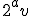

Note: Aside from this note, this is an almost exact duplicate of what used to be this web page, written by Clifford Stern and archived by the Wayback Machine on June 6th, 2011. If the link works for you, please tell me so that I may take down this page.
ANALYSIS
Let's review the definitions of drivers and guides, as
documented in 3630finishes.pdf:
A guide consists of 2a (a>0)
along with a subset of the prime factors of
A driver is a special type of guide that takes
the form 
where v |
I propose to extend the lexicon of aliquot sequences as
follows:
For the odd integer t>1, write (t) = 2b
· u where u is odd. Then b
is defined as the 2s count of t.
Let v be the product of a subset of the prime factors of
2a and b the
2s count of v. Define the class of the
guide to
be a-b. Here are how various drivers and guides fit into
the resulting classes:
Class -1
Even perfect numbers:
2 · 3
2^2 · 7
2^4 · 31
2^6 · 127
Class 0
2^3 · 3 · 5
2^5 · 3 · 7
2^9 · 3 · 11 · 31
Class 1
2
2^3 · 3
Class 2
2^2
2^3 · 5
2^5 · 7
Class 3
2^3
2^5 · 3
Let ni = · s · t be a member of an aliquot sequence where is its guide, s is the product of the odd prime factors of ni whose exponents are even and t>1 the product of the remaining factors. Let a change in the exponent a be termed a mutation. This occurs only when the 2s count of t is equal to or less than the class of . In the former case, the exponent a increases and in the latter, a is reduced to the 2s count of t. The stability of a guide depends upon its class: the smaller the class, the more stable the guide. For example, a class 2 guide will mutate if t is the product of two primes of the form 4n+1 or is a prime of the form 8n+3 or 4n+1. But a class 1 guide mutates only when t is a prime of the form 4n+1. When the class of a driver is zero or -1, a small 2s count of t is not sufficient in itself to effect a change in the exponent a because the 2s count of t is always greater than zero. Help is required from one of the components of v by having its exponent aquire an even power in order to temporarily raise the driver's class above zero. For example, when the 2^2 · 7 driver takes the form 2^2 · 7^2, its class of -1 temporarily increases by 3 (the 2s count of 7) so a mutation will occur when the 2s count of t is 2 or 1.
A sequence decreases in a significant and reliable way only
when it is driven by the downdriver. This explains why the
overall trend is up: the downdriver is badly outnumbered by those drivers
that propel sequences upwards. And to make matters worse, the
principle ones are of class zero or -1 and thus more stable than
the downdriver, which is of class one. When a long run of the
downdriver ends in mutation, the likelyhood is that
the next driver that is aquired will be one of the others,
sending the sequence upwards. In fact, it is not uncommon for the
downdriver to mutate directly to 2^2 · 7. Any of the drivers
listed at the top of the main page has the potential to send a
sequence beyond the range of practical computation, especially
those of class -1. When a sequence is adrift, not propelled by a
driver or guide, it is at constant risk of aquiring one that
sends it upwards: every time the exponent of 2 changes, there is
a chance that the new 2a is
accompanied by one or more of the factors of